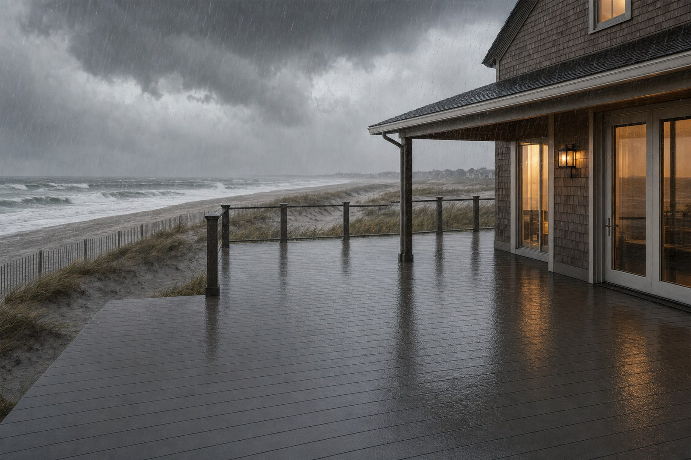
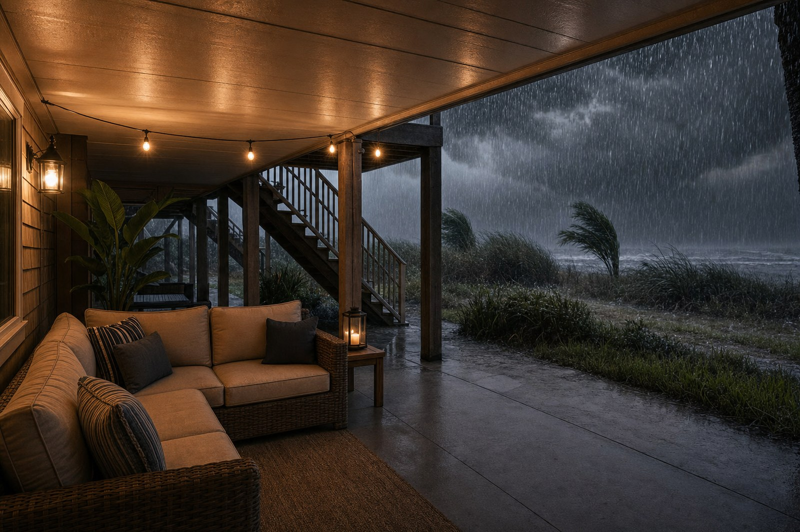

Every year around this time, shore homeowners start watching the tropics. Furniture gets dragged inside, the grill gets covered, and everybody keeps an eye on the forecast cone. What almost nobody thinks about is the deck, which is unfortunate, because a deck is one of the few things on the property that takes storm damage you cannot see for years.
This year's outlook is on the quiet side. NOAA is calling for a below-normal Atlantic season with 8 to 14 named storms and a 55 percent chance the season finishes below average, driven largely by a developing El Nino, according to the Climate Prediction Center outlook. Colorado State trimmed its numbers again in July, down to nine named storms, as reported by The Weather Channel.
A seasonal outlook predicts how busy the whole basin will be. It does not predict what happens at your address. Colorado State says it plainly in every forecast: it only takes one hurricane making landfall to make it an active season.
And in New Jersey, the tropics are only half the story. The Nor'easters that arrive in late fall and winter push wind-driven rain sideways for a day and a half at a stretch, which is exactly the kind of water a deck is worst at handling.
What a storm actually does to a deck
Ordinary rain falls straight down, hits the boards, and most of it runs off. Storm rain does not behave that way. Sustained wind drives water horizontally, up under the boards, into the gaps, and against the wall where the deck meets the house. Water gets to surfaces that a normal shower never touches.
Where that matters is the framing. Every deck built with gaps between the boards lets water fall onto the tops of the joists, the beams, and the ledger. That framing sits in the shade and dries slowly. A big storm soaks it, coastal humidity keeps it damp for days afterward, and salt in the air holds moisture against the joist hangers and screws. Do that a few times a season and you get rot and corrosion working from the inside out, while the deck surface still looks perfectly fine from above. We covered that failure mode in detail in why decks rot from the top down.

The seven-step storm prep checklist
Run this list when a system is a few days out, and again at the start of every season. Check each item off as you go. None of it takes long, and most of it costs nothing.
Clear the deck and secure anything that can fly
Furniture, umbrellas, planters, grills, cushions, side tables, and solar lights all become projectiles in a 60 mile per hour gust, and they gouge deck boards on the way. Move what you can into the garage or under the house. Anything too heavy to move should be laid flat and tied down, not just tucked into a corner. Do not remove deck boards. Properly fastened boards are safer in place, and pulling them only creates loose debris and weak spots.
Open up the drainage paths
Sweep the gaps between the boards. Leaves, pine needles, and grit pack into those gaps over the summer, and clogged gaps hold standing water on the deck instead of letting it drain. While you are at it, clear the gutters and downspouts above the deck and make sure downspouts discharge away from the posts and footings, not right beside them. If you have a below-deck trough or ceiling system, flush the troughs now, because they only work when they are clear.
Inspect the ledger and the flashing
The ledger is the board bolted to your house that carries the deck, and it is the single most important connection on the structure. Look for gaps between the ledger and the siding, missing or lifted flashing along the top edge, rust streaks running down from the bolts, and any soft or dark wood. Wind-driven rain finds those gaps and pushes water behind the ledger and into the wall of the house. If the flashing looks compromised, get a contractor out before the storm, not after.
Test the railings, stairs, and fasteners
Grab each railing post and push hard. Any movement means the connection is already compromised, and a storm will finish the job. Walk the stairs and check the stringers where they meet the ground. Look for popped screws, lifted nail heads, and split board ends across the whole surface. On a coastal deck, corroded fasteners are the usual culprit, since salt air works on the hardware faster than it works on the wood.
Go under the deck with a flashlight
This is the step everyone skips, and it is the one that finds real problems. Get underneath and look at the tops of the joists and beams for dark staining and soft spots, at the joist hangers for rust or missing nails, and at the post bases for standing water and rot at the connection to the footing. Press a screwdriver into any suspicious wood. If it sinks in easily, that is decay, and it needs a contractor rather than a storm.
Protect what is stored below
If you keep bikes, tools, beach gear, or a seating area under a raised deck, assume that space will get soaked unless the deck above is genuinely sealed. Lift anything valuable off the ground, pull electronics and cushions inside, and unplug outdoor outlets and low-voltage lighting under the deck. In flood-prone shore neighborhoods, get items above the expected water line, not just out of the rain.
Photograph everything before the storm
Take five minutes and shoot the deck from every angle, including the underside, the ledger, and the railings, with the date on the file. Dated before-photos are the difference between a straightforward insurance claim and a long argument about pre-existing condition. Store them somewhere off the property, in your phone's cloud backup or emailed to yourself.
After the storm passes
Once it is safe to go outside, walk the deck before you put the furniture back. Look for boards that have lifted or cupped, railing posts that moved, and debris jammed into the gaps. Then go underneath again with the flashlight and compare what you see to your photos. Fresh water staining on the joist tops tells you exactly where the water is getting in.
Rinse the surface with a hose and mild soap to get the salt film off, especially after a coastal storm. Skip the pressure washer. On PVC and composite boards, high-pressure water can create micro-tears in the surface and disrupt the cap layer, which is the part doing the UV and moisture work. Our full guide to cleaning PVC deck boards covers the safe routine.
You can prep a deck for a storm. You cannot prep the framing after the water has already been getting to it for ten years.
The prep step you only get to make once
Everything above is maintenance. It manages the damage, it does not prevent it, because a conventional deck is built to let water fall straight through the gaps onto the structure. The only way to keep storm water out of the framing permanently is to stop it above the joists, at the surface, before it ever gets down there.
That is what the AmeriDex system does. Every cellular PVC board locks onto a Dexerdry seal, an automotive-grade TPE gasket, as the deck is built. The seal closes the gap between the boards so wind-driven rain runs across the surface and sheds off the edge like water off a roof. The joists, beams, ledger, and fasteners stay dry through the storm, which means there is no repeated soaking for salt air and humidity to work with afterward. The boards themselves are solid cellular PVC with a proprietary ASA cap, so there is no wood fiber in them to absorb water at the cut ends.

The other benefit shows up the day after the storm. The space under the deck stays dry and usable instead of turning into a mud pit, which is worth real square footage on a tight shore lot. There are plenty of ways to use that dry space, and the above-joist versus below-joist comparison lays out the mechanics if you want the full picture.

Because the seal is set between every board during construction, AmeriDex is a new-build decision rather than a retrofit. If a storm this season shows you that your framing has been getting wet for years, the fall and winter are the right time to plan the replacement, and this is the detail to lock in before the boards go down. Our pre-construction checklist walks through the rest of that sequence.
Common questions
Should I remove my deck boards before a hurricane?
No. Properly fastened boards should stay put, and pulling them weakens the deck while creating loose debris. Put your effort into clearing furniture, planters, and anything else that is not fastened down.
Does a below-average seasonal forecast mean my deck is safe?
No. Outlooks predict basin-wide activity, not landfall at your address. One tropical system or a single strong Nor'easter can drive more water into your framing than an entire ordinary summer of rain.
My deck looks fine after the storm. Do I still need to check underneath?
Yes, and that is the whole point. Storm damage on a deck is almost always underneath first. The surface can look untouched for years while the joist tops and joist hangers are quietly going.
Can I add a drainage system to my existing deck before the next storm?
Below-joist trough and ceiling systems can be retrofitted, but they only catch water after it has already run across your framing. An above-joist system like AmeriDex stops it before the framing gets wet, and because the seal goes in board by board, it is designed into a new deck.
We are a New Jersey company based in Brick, so we have watched what a hard season does to a shore deck. Request free samples to see the board and the seal in person, or start a free quote to size the system for your project.